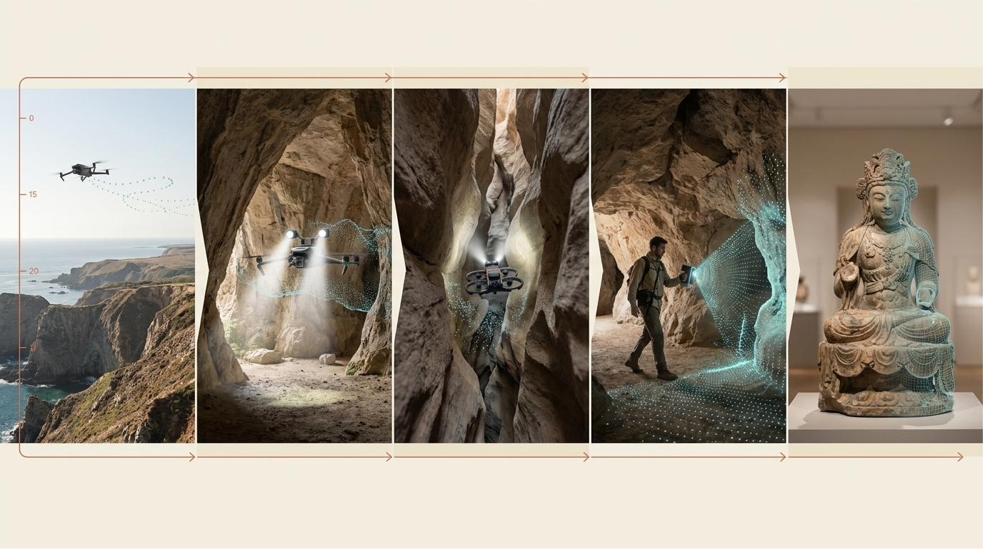

제주 기반 공간 데이터 풀스택 스튜디오. 모든 캡처·재구성 기술을 자체 보유하며, 자연·산업·문화·환대 전 영역에서 검증된 정밀 측정 표준을 충족합니다.
자연·산업·문화·환대의 모든 공간을 측정 가능한 디지털 데이터로. 한 회사 안에서 처음부터 끝까지.
유물·유적 정밀 실측, 보존 기록, 디지털 아카이브.
안전진단 보조, 노후 시설 역설계, 다중분광 환경 모니터링.
실제 공간 기반 3D 애셋, 가우시안 스플래팅, 시네마틱 광역 캡처.
Scan-to-BIM, 인테리어 도면화, 노후 건물 역설계.
가상 투어, 디지털 트윈 마케팅, 멀티 디바이스 임베드.
광역 시네마틱부터 마이크로 0.07mm까지. 하나의 팀이, 같은 현장에서, 같은 출장 한 번에.

현장 캡처 → 데이터 재구성 → 정밀도 검증 → 멀티 디바이스 활용. 한 회사 안에서 처음부터 끝까지.
사진이 아닌 실측 데이터입니다. 글로벌·한국의 정밀 측정 표준 오차 허용 범위를 5축 라인업이 어떻게 충족하는지 사실 기반 매핑.
본 스튜디오의 5축 라인업은 마이크로 0.07mm부터 광역 RTK cm급까지, 다음의 글로벌·한국 표준이 정의하는 오차 허용 범위를 물리적으로 충족합니다.
| 표준 | 요구 정밀도 | 충족 축 | 적용 분야 |
|---|---|---|---|
| ANSI Z765-2021 미국 거주공간 면적 표준 | 1인치 / 2.54cm | AXIS 04 (2cm @10m, 오버 엔지니어링) | 부동산 감정·대출 평가·면적 산정 |
| USIBD LOA50 BIM 최고 정밀도 | 1mm 미만 | AXIS 05 (0.07mm, 초과 달성) | 박물관 마이크로 문화재·항공우주 부품 |
| USIBD LOA20 BIM 일반 정밀도 | 5cm ~ 15mm | AXIS 04 (2cm, 완벽 충족) | 외형 기록·Scan-to-BIM 일반 |
| BIM LOD 500 준공 As-built | 시공 후 검증 | AXIS 04 (빠른 SLAM 효율) | 시설 유지보수·리노베이션 기초 |
| 한국 항공측량 국토지리정보원 | ±30cm 평면 | AXIS 02 (RTK cm급) | 공공측량·지형도 작성 |
| 한국 용지경계측량 | ±3cm | AXIS 04 (20m 내 충족) | 부지 경계·재산권 보조 |
| 한국 전통건축 실측 | 3mm 분해능 | AXIS 04·05 (모두 충족) | 한옥·사찰·궁궐 부재 변위 측정 |
| 다중분광 식생지수 산정 | NDVI·NDRE·CCCI 정량 산출 | AXIS 02 (4채널 동시 캡처) | 정밀 농업·임업 탄소·환경 모니터링 |
| 다중분광 비료 절감 검증 | 에이커당 정량 | AXIS 02 (PIX4Dfields 검증 ROI) | 농업 컨설팅 (에이커당 23파운드 절감 실증) |
2026년 기준 확보된 풀라인업. 각 장비는 5축 캡처 워크플로우의 명확한 역할을 갖고 있습니다.
3D 디지털 아카이빙·환경 모니터링·헤리티지 마이크로 트윈. 각 라인은 5축 라인업의 통합 운용으로 완성됩니다.
건축물·자연유산기록·도시계획·농림수산업·기타 영역의 다섯 가지 임무. 각 시나리오는 5축 라인업의 통합 운용으로 발주처가 활용 가능한 디지털 데이터를 산출합니다. 자세한 내용은 각 시나리오 페이지를 확인해 주세요.
호텔·펜션·카페·리조트·골프장·컨벤션센터·미술관·박물관 등 건축물의 풀스택 디지털 캡처. 가상 투어·디지털 아카이브·마케팅 콘텐츠·BIM 도면을 한 회사 안에서.
제주의 자연유산을 6개 영역으로 종합 기록. 자연 변화·붕괴 지형, 해수면 상승·침수 위험 지형, 동굴·용암동굴, 4·3 및 근현대 역사 유산, 문화재·인공 구조물, 식생·생태 변화. 시급성 등급으로 분류된 60여 개 대상지.
도시 공간 데이터 수집·분석·시각화. 자세한 내용은 시나리오 페이지에서 확인해 주세요.
농업·임업·수산업 영역의 정량 데이터 컨설팅. 자세한 내용은 시나리오 페이지에서 확인해 주세요.
그 외 공간 데이터 활용 영역. 자세한 내용은 시나리오 페이지에서 확인해 주세요.
발주처의 활용 목적에 따라 네 가지 포맷으로 납품. 한 번의 캡처로 모든 포맷을 동시 생성 가능합니다.
공공·산업·헤리티지부터 박물관·미술관·환대까지. 본 스튜디오의 5축 라인업은 다음 발주처를 지원합니다.
본 스튜디오가 만든 데이터가 아닌, 글로벌 검증 사례입니다. 동일 워크플로우 적용 시 기대 가능한 효과의 참고 지표.
호텔·환대·농업·임업 영역의 글로벌 표준 ROI 수치. 본 스튜디오는 동일 워크플로우(가상 투어, 다중분광, LiDAR 융합)로 발주처를 지원합니다.
본 스튜디오가 자리한 시장의 거시 데이터.
규모를 넘어서는 처리 환경입니다. 다중 워크스테이션 통합 운용과 발주처 보안 요구에 부합하는 처리 환경.